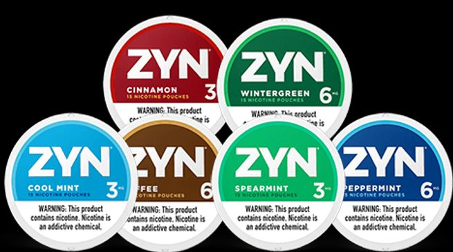
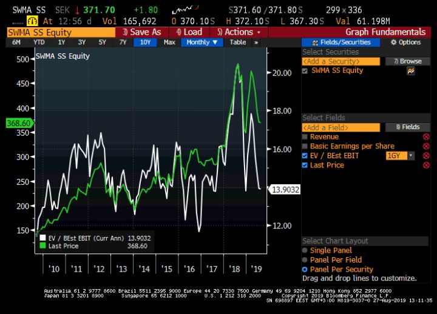
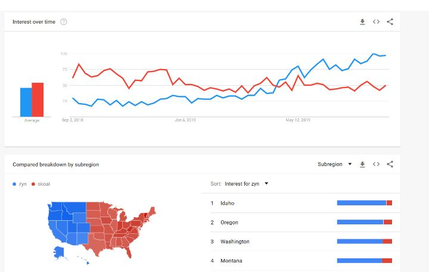
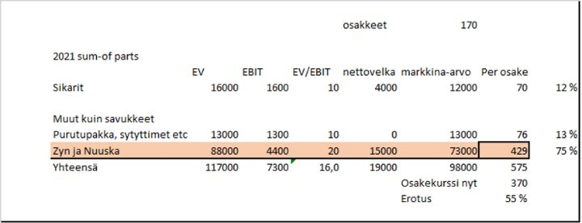

Swedish Match — nuuskasta tuottoa?
Yhteenveto
Swedish Match ei näytä erityisen edulliselta. Se toimii vähän arveluttavilla aloilla. Ehkä juuri näiden asioiden takia sijoittajat ole erityisen innostuneita siitä juuri nyt. Kuitenkin yhtiöllä on hyvä kasvuoptio ja johto on varsin omistajaystävällinen.
Otamme pienen omistuksen Swedish Matchiin. Tällä hetkellä yhtiö hinnoitellaan aivan kuin korot eivät olisi nollassa ja kaikki vakaat yhtiöt huiman kalliitta. Sikaribisnes on pieni miinus, mutta Zynin maailmanvalloitus sitä isompi plussa.
Yhtiö on siis taantumankestävä, myyntiään ja voittoaan kasvattava firma P/E 16 ja 6% vapaan kassavirran tuotolla. Yhtiön ROI% on yli 50%, joten tulevaisuuden kasvu sataa nopeasti omistajien laariin.
Jatkossa position kasvattamiseen vaikuttaa erityisesti Zynin kasvulukemat. Tuotteen kiinnostusta ja suosion kasvua pitää yrittää kaivella jo ennen osavuosikatsauksen numeroita. Jos tuotteen kasvukäyrä heikkenee, ei tuloskasvu ja arvostuksen nousu toteudu.
Miksi yhtiö kiinnostaa?
Viimeisen parin vuoden aikana kaikki laadukkaat ja taantumassakin turvalliset osakkeet ovat ostettu ennätysarvostuksille. Viimeaikainen pörssikurssien lasku huipuista on ollut valtaosin syklisten alojen ajamaa. Kuvatakseni tilannetta käytännöllisemmin, Elisa ja Kesko ovat kaikkien aikojen huipuissaan, mutta Wärtsilä ja Cargotec ovat laskeneet vuodessa 37% kumpainenkin.
Sijoittajat varautuvat taantumaan ja maailmankaupan hidastumiseen. Moni syklinen vaikuttaa jo suhteellisen järkevältä vedolta, mutten haluaisi ladata salkkua täyteen syklisiä yhtiöitä — taantumassa ne ajetaan yleensä paljon alempiin hintoihin kuin olettaisi.
Mutta kaikki laadukas ja vakaa on törkeän kallista! Mutta ehkä jotain kuitenkin löytyisi?
Swedish Match on ruotsalainen perinteinen tulitikku- ja tupakkayhtiö. Tästä syystä olen siihen sijoittamista karsastanutkin. Vuonna 2016 yhtiö kuitenkin luopui varsinaisista tupakoistaan. Jäljelle jäivät nuuska, purutupakka, sytkärit ja sikarit.
Yhtiön osakekurssi on 370 SEK, liikevaihto kuluvana vuonna 14,3 miljardia SEK ja markkina-arvo 63,3 miljardia kruunua. Yhtiö ei varsinkaan liikevaihtoon verrattuna ole halpa, mutta toisaalta sillä on pitkä historia hyvästä kannattavuudesta.
Näistä meitä kiinnostaa eniten tuo nuuskaosasto. Yhtiöllä on vahvoja brändejä ja etenkin Ruotsissa vahva markkina-asema. Yhdysvaltojen nuuskamarkkinoista yhtiöllä on yli 10%. Sytkärit ja sikarit joutaisivat myytäväksi, mutta niille on helppo laskea arvo.
Eettisyys on ihan hyvä kysymys. En haluaisi sijoittaa tupakkayhtiöön. En näe sikareita aivan tai varsinkaan nuuskaa samassa valossa. Tästä voi toki olla eri mieltä. Näen Swedish Matchin valoisimman tulevaisuuden juuri siinä tuotteessa, jossa ei ole tupakkaa. Tuote on nimeltään Zyn. Se ei ole nuuskaa, vaan maustettuja nikotiinipusseja. Samankaltaisia kuin mitä Suomenkin marketeissa myydään Zontec -brändillä, mutta vahvempia ja useimpien mielestä miellyttävämpiä.
Zynissä on toki nikotiinia, joten se aiheuttaa riippuvuutta. Mutta jos se auttaa luopumaan tupakasta, se on positiivista. Yhdysvaltojen elintarvike- ja lääkevirasto vaativat, että purkissa mainitaan riippuvuudesta, mutta antoivat luvan myydä tuotetta ilman mainintaa syövästä.

Vuonna 2016 ollessani Yhdysvaltojen itärannikolla Swedish Matchin tuotteita oli lähes mahdoton löytää, ellei tiennyt mistä etsiä. Viime vuonna Manhattanin kioskeissa ne olivat jo hyvin esillä. Nyt Zyn tuntuisi muuttavan tilanteen täysin. Toisen neljänneksen osavuosikatsauksessaan, yhtiö kertoi Zynin löytyvän jo 51 000 myyntipisteestä ja rasioita myytiin 11,5 miljoonaa kappaletta. Myynti on siis lähtenyt todella vauhdikkaasti liikkeelle.
Swedish Matchilla on siis riippuvuutta aiheuttava, mutta melko rajatusti terveydelle haitallinen uusi tuote, jonka myynti kasvaa ja laajenee uusille markkinoille. Entä kilpailuetu? Varmastihan kun tuotteen suosio kasvaa, niin kilpailu kiristyy ajaa katteet alas? Itseasiassa Zyn myynnin hyväksymisen jälkeen nikotiinituotteiden sääntely on kautta linjan muuttunut paljon tiukemmaksi, ja jatkossa kilpailevan tuotteen saaminen markkinoille voi olla varsin vaikeaa.
Arvostus
Swedish Match ei ole ikinä ollut varsinaisesti halpa. Alla on kuvaaja, jossa vihreä käyrä kuvaa hintaa ja valkoinen käyrä yritysarvon ja liikevoiton suhdetta. EV/EBIT(Yritysarvo/liikevoitto) on siis suunnilleen 10 vuoden keskiarvossa. Tulevien vuosien päänvaiva on mitä tehdä sikareille, mutta toisaalta positiivisena tekijänä on Zyn. Sen avulla liikevoiton odotetaan kasvavan 25% 2019->2021. Aiemmin Swedish Match on päässyt analyytikoiden parin vuoden päähän asettamiin ennusteisiin hyvin. Zyn kontribuutio tulokseen nousee nollasta 15:sta prosenttiin vuonna 2021. Toki näitä on lähes mahdotonta ennustaa tarkasti, mutta ainakin alussa myynti on järjestelmällisesti ylittänyt odotukset.

Eli arvostus näyttäisi olevan linjassa aikaisempaan. Kuitenkin yhtiön epämiellyttävin osa tupakat on nyt myyty, liikevaihto kasvaa entistä vauhdikkaammin, ja muiden yhtiöiden arvostustaso on noussut selvästi.
Vaikken säännöllisesti nuuskaa käytäkään, niin oma kokemukseni on, että Yhdysvalloissa nuuska on lähes sietämättömän huonolaatuista. Ei ihme, ettei se ole erityisen suosittua verrattuna sähkötupakkaan.
Yksi merkki mikä on jäänyt kioskeista mieleen, on Skoal. Jos vertaa, miten Zyn Google-haut ovat lisääntyneet siihen verrattuna, trendi on hyvä. Zyn haut(sininen) ovat nelinkertaistuneet vuoden alusta:

Zyn on siis vielä pieni tuote koko yhtiön kannalta, mutta kasvuvauhti on huima.
Riskit yhtiössä ovat
- Sikarimyynti Yhdysvalloissa on heikkenemään päin, etenkin kun makujen lisäämistä on rajoitettu.
- Nuuskassa maalaisjärki sanoisi, että kilpailu halpatuottajilta voi kasvaa, ja siten heikentää kilpailutilannetta.
- Zyn myynti voi pettää odotukset.
Swedish Match on kuitenkin vahva brändiyhtiö, jonka kaltaiset ovat usein pärjänneet yllättävän hyvin kilpailussa. Ilman kasvua Yhdysvalloissa yhtiö ei olisi erityisen kiinnostava, mutta tämä optio tasapainottaa riskejä hyvin.
Jos pohtii, mistä yhtiön arvo vuonna 2021 koostuu, niin se on jo 75% laskusuhdanteet kestävästä kasvualasta. EV/EBIT 20 nuuska & Zyn liiketoiminnasta vaatisi, että etenkin Zyn kasvu jatkuu vielä pitkään. Toisaalta nollakorkojen ympäristössä vakaata kasvua arvostetaan korkealle. Hitaasti kasvavien peruselintarvikeyhtiöiden (P&G, Colgate, Nestle, Clorox) hinnoittelu on keskimäärin yli 20 EV/EBIT.

575 SEK:n kurssi olisi 55% ylempänä kuin nykyinen 370 SEK. Noususta 32% olisi tuloskasvua ja 23% kasvu- ja toimialaprofiilin muutoksesta johtuvaa arvostuksen nousua. Yhtiön pilkkominen voisi olla osa arvon vapautumista.
Asia mistä Swedish Matchissä tykkään, on sen tapa jakaa hyvää kassavirtaansa omistajilleen osinkojen ja omien osakkeiden oston kautta. Viidessä vuodessa yhtiön osakemäärä on laskenut 15% ja yhtiö on jakanut koko ajan osinkoa. Ensi vuonna shareholder yieldin (osinko+omien ostot) odotetaan nousevan 7-8% tasolle.
Eli näen tavallaan miksi osake ei ole korkeammalla, mutta pystyn hyvin näkemään tilanteen, jossa seuraavien muutamien vuosien tuotto olisi erinomainen.
Disclaimer:
Kolumnit sisältävät mielipiteitä ja mahdollisesti tietoa omista sijoituksistamme, jotka voivat vaihdella päivästä toiseen. Mitään, mitä kirjoitamme ei tule ottaa sijoitussuosituksena. Kuten teksteissämme painotamme, päätökset kannattaa aina tehdä itse. Lukija vastaa itse voitoistaan ja tappioistaan.